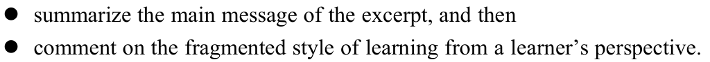

第 1 题 #
1.
英语专业四级 · questions · 2025
题号和章节目录由结构化数据生成。选项按卷面字母顺序显示；原标记保留在 JSON 中。
Listen to the following passage. Altogether the passage will be read to you four times. During the first reading, which will be done at normal speed, listen and try to understand the meaning. For the second and third readings, the passage, except the first sentence, will be read sentence by sentence, or phrase by phrase, with intervals of 15 seconds. The last reading will be done at normal speed again and during this time you should check your work. You will then be given ONE minute to check your work once more.
Now, listen to the passage.
China has made remarkable progress in the ecological conservation of the Yellow River.
In this section you will hear a talk. You will hear the talk ONCE ONLY. While listening, you may look at the task on ANSWER SHEET ONE and write NO MORE THAN THREE WORDS for each gap. Make sure what you fill in is both grammatically and semantically acceptable. You may use the blank sheet for note-taking.
You have THIRTY seconds to preview the gap-filling task.
In this section you will hear two conversations. At the end of each conversation, five questions will be asked about what was said. Both the conversations and the questions will be spoken ONCE ONLY. After each question there will be a ten-second pause. During the pause, you should read the four choices of A, B, C and D, and mark the best answer to each question on ANSWER SHEET TWO.
You have THIRTY seconds to preview the choices.
Now, listen to the conversations.
Questions 1 to 5 are based on Conversation One.
1.
4.
5.
Questions 6 to 10 are based on Conversation Two.
10.
There are twenty sentences in this section. Beneath each sentence there are four options marked A, B, C and D. Choose the one that best completes the sentence or answers the question. Mark your answers on ANSWER SHEET TWO.
11. She thought it advisable that a janitor ________ against any possible intruder.
12. Lisa managed to save ________ she could out of her low wages to help her sister.
13. What leaves me with the deepest impression in the park is a(n) ________ trunk.
14. A more flexible means of communication is always an advantage, ________ being equal.
15. If you would kindly agree to the terms, we’ll send you the samples right away. The underlined word indicates ________.
16. My mother would have been in Beijing by now if she had not missed the train. The underlined part in the sentence expresses a(n) ________.
17. One can never be happy if one is always envious ________ others.
18. “It is taking forever to upload an album.” The underlined part expresses________.
19. “If you frequently forget where you parked your car, there is an app that could be what you’re looking for.”
The underlined word expresses ________.
20. Firms that use computers have found that the number of staff ________ is needed for quality control can be substantially reduced.
21. Ann hurried back, having a guilty ________ at leaving her daughter at home alone.
22. Your earnings will be in ________ to the amount of work you do.
23. This drink is very tasty, and it is nutritious as well, as it is ________ with vitamin C.
24. The discovery of the New World is a ________ in the world history.
25. It is ________ to keep a note of these important data, so we won’t lose them.
26. I don’t think that was a mistake; I think it was ________ made so.
27. You need to contact your doctor if the symptoms ________ for a day.
28. There is a strong ________ between the father and the son.
29. The smartphone manufacturer blamed ________ batteries for last year’s humiliating recall of its flagship smartphone.
30. While he says his next job won’t be as a head coach for the current team, he’s ________ several possibilities, including working overseas.
Decide which of the words given in the box below would best complete the passage if inserted in the corresponding blank. The words can be used ONCE ONLY. Mark the letter for each word on ANSWER SHEET TWO.
Traditionally, the subject of metaphor tends to come up in literature classes where everyone learns that a metaphor is a figure of speech: “No man is an island.” It’s learned first as an element of (31) ________, a way to polish language. Metaphors are first brought to our attention in poems, mostly, but we’re taught to recognize them in stories and songs too: “She’s got the moon in her eyes.” Consequently, many people associate metaphors most (32) ________ with the literary arts and understand them as a matter of language — a figure of speech. But metaphors are also a tool for discovering and connecting ideas — a figure of thought.
Whether (33) ________ or conceptual, metaphors are acts of imagination. To see one thing in terms of another is to think (34) ________. That is, we set up correspondences between two concepts. This involves partially structuring our understanding of an abstract object (love, for example) by seeing it in terms of a rather (35) ________ object (say, a garden). Thus we can think and talk about “cultivating” (36) “________” and “tending to” our friendships. The process of setting up such correspondences is called “mapping.” By mapping gardens onto love, which are otherwise two (37) ________ conceptual domains, we invite a comparison and give visible forms to an abstract idea. “Gardens” is the source domain from which we draw properties that can be (38) ________ to “love,” the target domain. Through metaphors, both conventional and unconventional, we build and lay claim to (39) ________ among otherwise discrete phenomena. The habit of metaphorical thinking belongs to everyone. Metaphor is very much involved in the way they (40) ________, talk about, and most of all, experience the world.
In this section there are three passages followed by ten multiple choice questions. For each multiple choice question, there are four suggested answers marked A, B, C and D. Choose the one that you think is the best answer and mark your answers on ANSWER SHEET TWO.
(1) Six months before she died, my grandmother moved into an old people’s home and I visited her there. She was sitting in the living room with about fifteen other residents, mostly women, half of them asleep. The room was clean and warm, with flowers and pictures, and the care assistants were kind and cheerful. A talk show was on the television, and the only other sound was snoring and embarrassing digestive noises. People only moved when they needed to be helped to the bathroom. It was depressing. Gran talked a lot about how much she missed seeing her grandchildren, but I knew from my sister that they hated going to visit her there and, to be perfectly honest, I couldn’t wait to get away myself.
(2) So I was interested to read a newspaper article about a new concept in old people’s homes. The idea is simple, but revolutionary: combining a residential home for the elderly with a nursery school in the same building. The children and the residents eat lunch together and share activities such as music, painting, gardening and caring for the pets which the residents are encouraged to keep. In the afternoons, the residents enjoy reading or telling stories to the children and, if a child is feeling sad or tired, there is always a kind lap to sit on and a cuddle. There are trips out and birthday parties too.
(3) The advantages are enormous for everyone concerned. The children are happy because they get a lot more individual attention and respond well because someone has time for them. They also learn that old people are not different or frightening in any way. And of course, they see illness and death and learn to accept them. The residents are happy because they feel useful and needed. They are more active and more interested in life when the children are around and they take more interest in their appearance too. And the staff are happy because they see an improvement in the physical and psychological health of the residents.
(4) Nowadays there is less and less contact between the old and the young. There are many reasons for this, including the breakdown of the extended family, working parents with no time to care for ageing relations, families that have moved away and smaller flats with no room for grandparents. But the result is the same: increasing numbers of children without grandparents and old people who have no contact with children. And more old people who are lonely and feel useless, along with more and more families with young children who desperately need more support. It’s a major problem in many societies.
(5) That’s why inter-generational programs, designed to bring the old and the young together, are growing in popularity all over the world, supported by UNESCO and other local and international organizations. There are examples of successful initiatives all over the world. Using young people to teach IT skills to older people is one obvious example. Using old people as volunteer assistants in schools is another, perhaps reading with children who need extra attention. There are schemes which involve older people visiting families who are having problems, maybe looking after the children for a while to give the tired mother a break. Or “adopt a grandparent” schemes in which children write letters or visit a lonely old person in their area. There are even holiday companies that specialize in holidays for children and grandparents together. One of the successful schemes pairs young volunteers with old people who are losing their sight. The young people help with practical things such as helping with online shopping, and the older people can pass on their knowledge and experience to their young visitors. For example, a retired judge may be paired with a teenager who wants to study law. Lasting friendships often develop.
(6) But it isn’t only the individuals concerned who gain from inter-generational activities. The advantages to society are enormous too. If older people can understand and accept the youth of today, and vice versa, there will be less conflict in a community. In a world where the number of old people is increasing, we need as much understanding and tolerance as possible. Modern society has isolated people into age groups and now we need to rediscover what “community” really means. And we can use the strengths of one generation to help another. Then perhaps getting old won’t be such a depressing prospect after all.
41. What does “It” in Para. 1 refer to?
42. Which of the following statements is INCORRECT according to Para. 3?
43. The author uses ________ to explain the program’s popularity in Para. 5.
44. The following are the advantages of inter-generational activities EXCEPT ________.
(1) My father’s youngest brother, Uncle Chul, shared the Lee’s famously bad reaction to liquor, which was to turn beet-red in the face, grow dizzy and finally get sick. In spite of this, he was always happy to stay up late at family gatherings. After a few glasses of whisky he would really loosen up, and, with the notable exception of my mother, we all appreciated his rough language and stories. Only when Mother came in from the kitchen would his talk soften, for he knew he had always fallen short in her eyes. If they were ever alone together, say in the kitchen, after dinner, he would use the most decorous (得体的) voice in asking for a glass or a fresh bucket of ice, and even offer to help load the dishwasher or run an errand to the store.
(2) On one of those nights we sped off, both happy for a break in the long evening. He asked me about school, what sports I was playing, but the conversation inevitably turned toward my parents, and particularly my mother — how much she had invested in me, that I was her great hope. I thought it was odd that he was speaking this way, like my other relatives, and I answered with some criticism of her — that she was too anxious and overbearing. He stared at me and, with a hard solemnity I had not heard from him before, said that my mother was one of the finest people one could ever know. He kept a grip on the wheel and in the ensuing quiet of the drive I could sense how he must have both admired and despised her. In many respects, my mother was an unrelenting woman. She tended to measure people by the mark of a few principles of conduct: ask no help from anyone, always plan for the long run and practice (her own variation of) the golden rule, which was to treat others much better than oneself.
(3) In her mind, Uncle Chul sorely lacked on all these accounts. In the weeks following our drive, my father would be deciding whether to lend him $10,000 to start a business. As always after dinner, my parents sat in the kitchen and spoke in Korean, under the light of a fluorescent ring. My mother, in many ways the director of the family, questioned my uncle’s character and will. Hadn’t he performed poorly in school, failed to finish college? Hadn’t he spent most of his youth perfecting his skills as a black belt in tae kwon do (跆拳道) and his billiards game? Wasn’t he a gambler in spirit?
(4) My father could defend him only weakly. Uncle Chul had a history of working hard only when reward was well within sight, like cash piled high on the end of a pool table. His older brothers were all respected professionals and academics. My father was a doctor, a psychiatrist who had taught himself English in order to practice in Vancouver. Uncle Chul had left Korea after a series of failed ventures and odd jobs, and found himself broke with a wife and new baby. How valuable were his tae kwon do trophies now? What could he possibly do in this country?
(5) My parents argued fiercely and my father left the kitchen. But as was my mother’s way, she kept on pushing her side of the issue, thinking aloud. My father was throwing away his hard-earned money on the naive wish that his little brother had magically changed. Uncle Chul was a poor risk and even now was complaining about his present job, hauling and cleaning produce for a greengrocer. He would get to the store at 4 a.m. to prepare vegetables for the day’s selling. While he shared a sofa bed with his nephew in his older brother’s tiny apartment, his wife and infant daughter were still in Seoul, waiting for him to make enough money to send for them.
45. Uncle Chul had ________ the author’s mother.
46. We can infer from the passage that the author’s mother was NOT ________.
47. We learn from the passage that Uncle Chul was a(n) ________ person.
(1) Deep in the jungles of Colombia there is a kind of flower that attracts bees with its unique perfume. In Venezuela there is a flower people collect for its large white or yellow petals. Few people ever find it, though, since it only blooms for a few days. There is a small pink and yellow flower that only grows in a very specific part of the state of Florida. It also only grows on trees, and wind or birds may spread its seeds. These flowers are some of the most rare and delicate species in all of nature. They are all types of orchids (兰花).
(2) For hundreds of years orchids have been prized discoveries of collectors and adventurers hoping to find new and exotic breeds of the flower. In her book The Orchid Thief, author Susan Orlean tells how in the 1800s orchids became popular in Europe, which made them very valuable. Many “orchid hunters” set out to find and bring back new types of orchids to sell. However, many of the men who went looking for the mysterious orchids met with tragedy instead.
(3) While the plants have long been valued for their beauty, they may be even more important to science and our understanding of co-evolution. Unlike plants that can self-pollinate (自传花粉), orchids need very specific insects or birds to spread their pollen (花粉). The process by which insects, the wind, or birds spread the pollen of different flowers is called pollination. Pollen is a powder produced by plants that contains their genetic material. In order for the plants to reproduce, the pollen must be physically moved to the flower’s stigma (柱头), which contains an egg. Now the fertilized egg can become a seed. Birds and insects can pollinate plants by touching many different flowers and spreading the pollen around.
(4) Orchids evolved to attract insects and birds. Because there are many different species of orchid, there are also many different ways the orchids attract their pollinators. Orlean explains that “many species look so much like their favorite insects that the insect mistakes them for kin [other insects], and when it lands on the flower to visit, pollen sticks to its body... Another orchid imitates the shape of something that a pollinating insect likes to kill... Other species look like the mate of their pollinator, so the insect tries to mate with one orchid and then another... and spreads pollen from flower to flower each hopeless time.”
(5) Other orchids don’t use their shape at all, but rather produce specialized scents to attract specific insects, such as bees, beetles or flies. Some orchids smell like cake, some like chocolate, and some like rotting meat. All these smells may seem weird, but they exist to lure creatures to their pollen and help the orchids survive. The strategies to attract insects and spread their flowers’ pollen go on and on. Each family of orchids has a unique kind of insect or bird that visits their flowers, as well as its own way of attracting them. It has worked, too. According to NOVA, a science television series, “orchid species number more than 25,000 worldwide.” That is more kinds of species than any other flower on the planet, and new ones are still being found.
(6) Orchids and the insects that pollinate them are one of the most amazing examples of evolution. Though their degree of co-dependence varies, as it is apparent that at least some orchids are more reliant on their pollinators than the pollinators are on the orchids, the degree of evolutionary specialization is still very impressive. Research suggests that certain species of orchid evolved specifically to attract orchid bees, which collect a wide variety of scents from various plants in preparation for mating. In another case, an orchid mimics a female’s smell and appearance — and the male pollinator gets nothing out of the bargain whatsoever. By tricking the insects that collect its pollen, the orchid has survived since the time of the dinosaurs.
48. What does the word “prized” in Para. 2 mean?
49. How do orchids reproduce according to Para. 3?
50. We learn from the passage that orchids attract insects in ________ ways.
本页部分文字层异常，已保留原图文字区域；这些区域随窗口缩放，暂不能重新换行或复制。
In this section there are five short answer questions based on the passages in Section A. Answer the questions with NO MORE THAN TEN WORDS in the space provided on ANSWER SHEET TWO.
51. Why is the idea revolutionary for old people (Para. 2)?
此题暂无可用答案。
52. Explain “with the notable exception of my mother” in Para. 1.
此题暂无可用答案。
53. Cite one example of Mother’s principles of conduct in Para. 2.
此题暂无可用答案。
54. Cite two ways in which orchids attract insects to pollinate for them (Paras. 4 & 5).
此题暂无可用答案。
55. What does the word “tricking” (Para. 6) mean?
此题暂无可用答案。
Read carefully the following excerpt on the fragmented style of learning, and then write your response in NO LESS THAN 200 WORDS, in which you should

You can support yourself with information from the excerpt.
Marks will be awarded for content relevance, content sufficiency, organization and language quality. Failure to follow the above instructions may result in a loss of marks.
Write your response on ANSWER SHEET THREE.
As far as technology is concerned, the world has changed for our generation, and as parents, teachers, leaders and educators, we are seeing the impact of that change on our children.
The average 14-year-old now absorbs five hours’ worth of content for every hour that they are receiving information.
How? Well, your kid comes home from school and puts his headphones on. There’s a TV on in the corner, and he is checking his emails, watching vlogs, and researching his homework. Within an hour he has absorbed more information than we have in a whole afternoon.
Your kid is not “multi-tasking” as you might like to think; he does not take in separate pieces of information at exactly the same time — he is jumping between different tasks at incredible speeds.
Our generation learned at school that we usually start something, follow it through and then move on to the next thing. But the children of today no longer learn in this way; they have a fragmented attention span due to the fragmented style of learning in which they receive information.
I recently gave a speech, and my point is this: Stop blaming technology and embrace it. There is no point saying “Don’t look at the computer”; instead be creative and show your child more interesting things to look at on the computer!
Thousands of years ago people got their messages across to others by carving them on a tree or on a stone; now we have Social Media. Let’s move forward together with our children, and maybe we will all learn something along the way.
本页部分文字层异常，已保留原图文字区域；这些区域随窗口缩放，暂不能重新换行或复制。
Intercultural Communication Introduction
— problem-solving approaches — (1) ________ emotional expressions (1) ________ — expectations — (2) ________ in an intercultural encounter (2) ________ Characteristics
— verbal symbols: (3) ________ aspects of communication (3) ________ — nonverbal cues: smiles, accents, (4) ________ (4) ________
— nature of the intercultural encounter: (5) ________ (5) ________
— cultural community:
interacting individuals with (6) ________ (6) ________ — bounded unit:
(7) ________ with clear-cut boundaries (7) ________
— primary concern: (8) ________ (8) ________
— multilayered contexts involved, e.g. (9) ________ (9) ________ — (10) ________ of contexts: affecting communication (10) ________ effectiveness
2025年英语专业四级真题补充卷说明：本次考试全国出现了两套试题，其中LANGUAGE USAGE的部分试题和CLOZE的试题不同，现将其补充如下：
There are twenty sentences in this section. Beneath each sentence there are four options marked A, B, C and D. Choose the one that best completes the sentence or answers the question. Mark your answers on ANSWER SHEET TWO.
11. A number of years ago I ________ a brief talk about the evolution of the brain when someone asked a question that I couldn’t answer.
A had been giving B. were to give C. was giving D. gave
此题暂无可用答案。
13. The ________ erosional agent on Earth is running water.
此题暂无可用答案。
14. Faithful to its long tradition of innovation, the watch company introduced its latest smartwatch, thereby
________ a new watch category in the company’s history.
此题暂无可用答案。
16. I went there in 2014, and that was the only occasion when I ________ the journey in exactly two days.
此题暂无可用答案。
19. Which of the following sentences expresses probability?
此题暂无可用答案。
23. If you require advice on legal matters, you should ________ an appropriate professional.
此题暂无可用答案。
24. ________ services have battled the flames nonstop for days with thousands of firefighters on the ground.
此题暂无可用答案。
25. In advertising, cars are usually shown as facing to the right, so people judge them to be faster and therefore more ________.
此题暂无可用答案。
Decide which of the words given in the box below would best complete the passage if inserted in the corresponding blank. The words can be used ONCE ONLY. Mark the letter for each word on ANSWER SHEET TWO.
Traditionally, the subject of metaphor tends to come up in literature classes where everyone learns that a metaphor is a figure of speech: “No man is an island.” It’s learned first as an element of style, a way to (31) ________ language. Metaphors are first brought to our attention in poems, mostly, but we’re taught to recognize them in stories and songs too: “She’s got the moon in her eyes.” Consequently, many people associate metaphors most (32) ________with the literary arts and understand them as a matter of language — a figure of speech. But metaphors are also a tool for discovering and connecting ideas — a figure of thought.
Whether ornamental or (33) ________, metaphors are acts of imagination. To see one thing in terms of another is to think (34) ________. That is, we set up correspondences between two concepts. This involves partially structuring our understanding of an abstract object (love, for example) by seeing it in terms of a rather (35) ________ object (say, a garden). Thus we can think and talk about (36) “________” “nurturing” and “tending to” our friendships. The process of setting up such correspondences is called “mapping.” By mapping gardens onto love, which are otherwise two (37) ________conceptual domains, we invite a comparison and give visible forms to an abstract idea. “Gardens” is the source domain from which we draw properties that can be (38) ________ to “love,” the target domain. Through metaphors, both conventional and unconventional, we build and lay claim to (39) ________among otherwise discrete phenomena. The habit of metaphorical thinking belongs to everyone. Metaphor is very much involved in the way they conceptualize, talk about, and most of all, (40) ________the world.